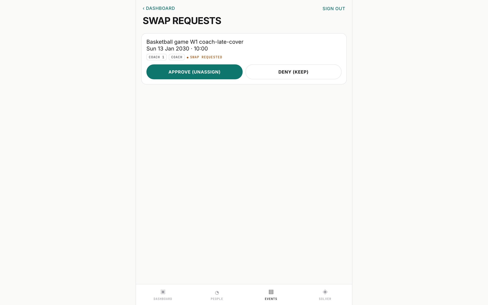
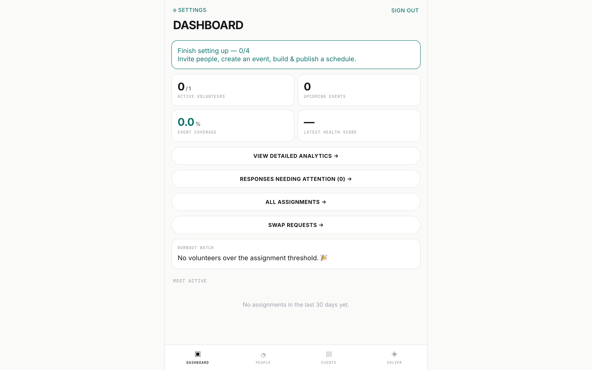

AI Product Studio（APS-3）的一部分 · 约 75 分钟 · 前置：第 4 模块
概览
第 4 模块把一个功能变成了智能体可以执行的一组产物。本模块提出多租户 SaaS 在配得上客户之前必须回答的两个问题：一个租户是否可能看到另一个租户的数据？ 以及 你如何证明整个产品在运营层面可用，而不只是功能上可用？ 你的案例研究是 SignUpFlow——一个面向教会、体育联赛和非营利组织的多租户志愿者排班 API，基于 FastAPI + SQLAlchemy 2.0 + Pydantic 2，采用 JWT（HS256，24 小时过期）+ bcrypt 鉴权（SignUpFlow/AGENTS.md，“Repository purpose”）。教会和篮球联赛共用同一套部署和同一个数据库；只要租户隔离（tenant isolation）在任何一处失效，儿童事工的排班表就会泄露给体育联赛——这正是足以葬送一个 SaaS 的那类缺陷。
所以第 5 模块是合二为一的两门纪律。第一，多租户是一条由机制强制执行的文化规则：缺少 org_id 过滤被定为 P0 缺陷，一个依赖项让跨租户请求失败，令牌绑定到租户，状态码经过选择，让攻击者无法枚举资源。第二，验收即架构：七层测试金字塔、带中断演练（disruption drill）的运营手册（playbook）、为真实测试层级提供参数的 JSON 夹具（fixture），以及一份诚实性由 pytest 本身强制保证的覆盖清单（coverage manifest）。对借助 AI 构建的人来说，主线是：智能体以机器的速度生成查询，每一条生成的查询都可能漏掉租户过滤——所以答案是可验证的规则（「每条查询都按 org_id 过滤。」而不是「多租户要小心」——AGENTS.md，“House style”），以及能抓住每一次漂移（drift）的测试。
学完本模块，你能够：
- 用一个依赖项（
verify_org_member）、绑定租户的令牌，以及防止资源枚举的有意设计的 401/403/404 语义，来强制实施租户隔离。 - 在同一份数据中把权限角色（
volunteer/admin）与排班资格（usher、coach）分开，并解释为什么把两者混为一谈是安全缺陷。 - 让授权矩阵可执行：一个为每个路由归类的策略文件，外加一个在路由缺失、过期或错接时失败的测试。
- 设计运营手册验收：为期六周的运营场景、中断演练、一个独立判定器，以及一份状态（automated/partial/manual/blocked）在构造上就诚实的覆盖清单。
指针约定。 SignUpFlow 的指针都相对于克隆下来的仓库根目录（例如
api/dependencies.py=SignUpFlow/api/dependencies.py）。打开行动步骤中提到的每一个文件——这些指针是本课程的出处。
M5.1 — 多租户是一条 P0 级文化规则（约 25 分钟）
一条检查
- 每一条数据库查询都必须按
org_id过滤 - 缺少过滤就是跨租户泄露
- 把它当作 P0 缺陷处理
一种感觉
- 「多租户要小心」
SourceSignUpFlow/AGENTS.md:57,61
目标
解释 SignUpFlow 为什么把缺少 org_id 过滤定为最高级缺陷（P0 bug），追踪强制实施隔离的三个机制（成员身份检查、绑定租户的令牌重新加载、管理员关卡），并采用不向攻击者泄露任何信息的状态码语义。
讲解
从规则开始，以下完整引自 AGENTS.md（“Multi-tenancy and auth (project-critical)”）：
「每一条数据库查询都必须按
org_id过滤。」……「缺少org_id过滤就是跨租户数据泄露。把它当作 P0 缺陷处理。」
注意它放在哪里：不是安全 wiki，而是 AGENTS.md——Codex CLI、Cursor、Aider、Jules、OpenHands、Sourcegraph Amp 和 Factory 都会读取的通用基线（AGENTS.md，文件开头）。这个位置正是关键。任何为了写查询而打开仓库的智能体都会先读到这条 P0 规则，而且规则按仓库的写作风格来写：祈使语气、可验证、不需要主观判断。「P0 缺陷」不是你在分诊时讨价还价的严重级别——跳过过滤的查询不能上线。文化规则只有具体到这种程度才起作用；「多租户要小心」只是一种感觉，「每条查询都按 org_id 过滤」才是一条检查。
这条规则在 api/dependencies.py 中有三个机械化的执行机制：
- 成员身份检查。
verify_org_member(person, org_id)比较person.org_id != org_id，不一致就抛出403，消息为 "Access denied: not a member of this organization"（api/dependencies.py，第 46–58 行）。接收明确的组织或人员引用的路由，会在任何查询运行之前调用它。 - 绑定租户的凭证重新加载。
get_current_user解码 JWT，要求sub（人员 id）和org_id两个声明都是字符串，然后用一个三重过滤重新加载这个人：Person.id == person_id、Person.org_id == token_org_id、Person.status == "active"（api/dependencies.py，第 97–121 行）。其他任何情况都是401。这个人既不能仅凭令牌被信任，也不能凭请求体被信任——令牌只是*指向*一行记录，这行记录必须仍然存在、仍然活跃，并且仍然属于签发令牌时的那个租户。这就是docs/API_AUTHORIZATION.md所说的“Session And Tenant Binding”：每个访问令牌和浏览器会话都同时携带人员sub和org_id，并且「缺少租户声明、租户声明不匹配、成员身份不活跃或人员已删除，都会使凭证失效」（第 28–33 行）。 - 管理员关卡。
get_current_admin_user包装了get_current_user，除非加载出的人员拥有文档规定的 admin 角色，否则抛出403"Admin access required"（api/dependencies.py，第 138–153 行）。
路由通过 Depends(get_current_user) 或 Depends(get_current_admin_user) 保护自己，而让整个模式变得安全的，是 AGENTS.md 中的一行：「永远不要从请求体读取用户状态。」请求体是攻击者可控的输入；身份和租户只能来自经过验证的凭证。一旦某个路由从 JSON 中接收 user_id 或 org_id 并信任它，下游的任何过滤都救不了你。
初始创建与增长。 租户关系在创建账号时就封闭了。POST /auth/signup「以原子方式创建一个新组织及其第一位 admin。永远不要用它加入已有组织；之后的所有账号都需要邀请」（AGENTS.md，第 59 行）。CLAUDE.md 说明了反面：注册「拒绝已有的组织 ID」，「不存在创建空组织的公开端点」，后续账号只能通过管理员创建的邀请加入。没有任何公开入口能让陌生人把自己插进你的租户——增长在构造上就只能通过邀请，而且邀请是一次性令牌（docs/playbooks/coverage.json 中的 BO-02：「邀请只能使用一次，资格不授予管理员权限」）。
有意设计的状态码语义。 多租户 API 通过错误码泄露信息，与通过数据泄露一样确定无疑。SignUpFlow 的契约写成了文档，并经过测试（docs/API_AUTHORIZATION.md，第 21–24 行）：
| 情形 | 状态码 | 原因 |
|---|---|---|
| bearer 令牌无效 | 401 | 凭证本身失败了——对请求者一无所知。 |
| 受保护路由缺少 bearer 令牌 | 文档：403；运行时和测试：401 | 文档写的是 HTTPBearer 的 403；在锁定的 FastAPI 0.141.1（SignUpFlow/poetry.lock:1036-1037）上，HTTPBearer 返回 401，SignUpFlow 自己的边界测试也这样断言（SignUpFlow/tests/api/test_scheduling_tenant_boundaries.py:207）。 |
| 已认证的操作者明确指定他人的组织 | 403 | 凭证有效，租户不对——是策略拒绝，不是认证失败。 |
| 猜测的资源标识符 | 404 | 「猜测的资源标识符在操作者的租户内查找，无论它属于他人还是不存在，都返回 404。」 |
最后一行就是防枚举机制。如果他人的 id 返回 403（「存在，但不是你的」），一个拥有合法账号的攻击者就可以遍历你的 id 空间，摸清有哪些资源存在。相反，目标行*先通过操作者的组织*加载——get_person_in_actor_org 查询 Person.id == person_id AND Person.org_id == actor.org_id，匹配不到就抛出 404（api/dependencies.py，第 61–66 行）——所以他人的人员和不存在的人员无法区分。docs/API_AUTHORIZATION.md 的排班表格按路由族应用了这个模式：可用时间的读取「先通过操作者的组织加载目标人员；同租户的同事得到 403，他人的或不存在的人员得到 404」（第 47 行）。枚举之所以失效，是因为两种回答看起来都是查无此项。
有一处细节，而且它是一个现实中的漂移案例：文档仍然写着缺少 bearer 令牌时「保留 FastAPI HTTPBearer 的 403」（SignUpFlow/docs/API_AUTHORIZATION.md:21-22），但框架已经改成了 401，仓库自己的测试也随之改了。守住契约的是测试；腐烂的是文字。实验中的 mini-flow 用 HTTPBearer(auto_error=False) 明确锁定 403，并在注释里说明原因，所以无论你更倾向哪个状态码，它的选择都写了下来，也经过测试。要学的不是哪个状态码在哲学上正确——而是状态码契约必须*有意设计并被强制执行*，因为一个没有写进文档的状态码就是一条未经规定的信息通道。
行动步骤
- 打开
AGENTS.md（“Multi-tenancy and auth”），把 P0 那句话原文照抄进你的证据日志。 - 打开
api/dependencies.py。找到verify_org_member、get_person_in_actor_org，以及get_current_user中那个三重Person过滤。各用一句话写出它们拒绝什么。 - 打开
docs/API_AUTHORIZATION.md，把四行状态码语义抄进你的证据日志。 - 在你自己项目的
AGENTS.md中：写下你的 P0 租户规则和你的 401/403/404 表格。用祈使语气，不用形容词。
M5.2 — 正确的 RBAC：权限 ≠ 资格（约 25 分钟）
SourceSignUpFlow/api/roles.py:8
目标
让共用一个 JSON 数组的两套词汇互不污染——一个账号*可以做*什么（权限）与一个人*能做*什么（资格）——并让整个授权面可执行，使漂移让测试失败，而不是让客户遭殃。
讲解

- COACH：这个空位需要的资格
- 批准或拒绝：管理员的决定
SourceSignUpFlow/docs/screenshots/current/basketball/1440/replacement-needed.png
SignUpFlow 中的一个 Person 带有一个 roles JSON 数组，里面放着两种毫不相干的字符串（api/models.py，见 CLAUDE.md “Key Patterns”）。权限角色（permission role） 恰好是 volunteer 或 admin 之一——由 frozenset PERMISSION_ROLES = {"admin", "volunteer"}（api/roles.py，第 8 行）和规则「恰好授予一个权限角色」（AGENTS.md，第 60 行）共同强制执行。volunteer 可以查看自己的数据、管理可用时间；admin 拥有完整的增删改查、求解器和邀请权限（CLAUDE.md，“RBAC”）。排班资格（qualification）——usher、coach、worship_leader、musician、sound、children_leader——存放在*同一个*数组中，但「从不被解释为权限」（AGENTS.md，第 60 行）。求解器用它们决定谁可以填补某个角色空位；没有任何代码路径用它们决定谁可以管理。
它防止的陷阱来自自然语言：「她带领敬拜，所以应该给她打开管理员开关。」docs/playbooks/church.md 用一句话拒绝了它——「不要仅仅因为某人带领一个事工就授予管理员权限。 这个应用只有 admin/volunteer 两个访问级别，没有按部门划分的管理者权限」（第 26–27 行）。那一行上方的操作者表显示，敬拜协调人——在运营上最重要的志愿者——的访问权限是 volunteer 加资格 worship_leader，而不是 admin（第 19 行）。产品中不存在「音乐事工负责人」这种权限级别；假装某个资格就是这样的级别，就等于每当有人发明一个技能字符串，就凭空造出一项新特权。
这种分离在 api/roles.py 中是可执行的。normalize_roles 对管理员提交的数组进行分拣：与 PERMISSION_ROLES 精确匹配的是权限角色，其余都是资格——但经大小写折叠后发生冲突的值（"ADMIN"）会抛出 "is an ambiguous permission role"，多于一个权限角色则抛出 "Select exactly one account access role"（第 38–53 行）。parse_qualifications 会拒绝经大小写折叠后等于 admin/volunteer 的资格字符串（第 19–20 行）。数据形态容纳两套词汇；策略让它们互不相交，漂移的输入会大声失败，而不是悄悄提权。
可执行的授权矩阵。 知道规则还不够——SignUpFlow 在每一次测试运行时都检查每个已挂载的路由是否遵守规则。api/route_auth_policy.py 按名称把每个 FastAPI 操作归入恰好五个策略类别：public（7 个操作——signup、login、health_check……）、public-token（限定范围令牌路由：接受/验证邀请、刷新、密码重置、日历订阅）、public-callback（Twilio webhook，默认关闭）、member（50 个操作）和 admin（78 个操作，包括 create_invitation、solve_schedule、publish_solution）——合计 143 个已归类的操作。ROUTE_AUTH_POLICY 字典是可执行的唯一事实来源；docs/API_AUTHORIZATION.md 开篇就是这么说的（第 3–9 行）。
强制执行靠的是 tests/unit/test_api_route_auth_policy.py——38 行代码，在三类漂移上失败：
- 缺失： 测试遍历实时路由表（
app.routes，筛选为/api加上/health//ready），并断言set(ROUTE_AUTH_POLICY) == set(routes)——新增路由却不归类，集合相等就会失败。 - 过期： 当某个策略条目指向一个已不存在的路由时，同一个断言会反向失败。
- 错接： 对每个已归类的路由，测试收集它依赖树中的名字并断言接线正确：
admin路由必须依赖get_current_admin_user，member路由依赖get_current_user，公开路由两者都不依赖（tests/unit/test_api_route_auth_policy.py，第 19–37 行）。
如果策略条目写的是 admin，而路由不小心接上了 get_current_user，这会被机械地抓住。这就是让矩阵可执行：文档描述意图，字典把意图编码下来，测试把字典与实时应用进行比较。
六步变更协议。 SignUpFlow/docs/API_AUTHORIZATION.md:101-118 规定了如何安全地修改授权：
- 在
api/route_auth_policy.py中新增或修改该路由的显式条目。 - 就在路由查询本身中应用由操作者推导出的租户与所有权过滤——而不是放在一个你希望会被调用的辅助函数里。
- 只要该操作可能暴露租户数据或改变状态，就为匿名、无效、成员、同租户管理员和他租户管理员这几类操作者添加真实 JWT 测试。
- 断言被禁止的写入不改变数据库状态，并且导出在序列化之前拿到的是已经过滤的数据集。
- 契约变化时，刷新 OpenAPI 快照和生成的移动端客户端。
- 在本地运行矩阵和排班回归测试：
poetry run pytest tests/unit/test_api_route_auth_policy.py tests/api/test_access_token_tenancy.py tests/api/test_scheduling_tenant_boundaries.py tests/security/test_authentication.py -q协议最后一条规则堵死了诱人的捷径：「不要把租户警告监听器当作授权。每一条可能触及组织数据的查询，都必须带有该路由策略所要求的具体租户谓词」（docs/API_AUTHORIZATION.md，第 74–76 行）。一条警告缺少过滤的日志只是可观测性；查询里的过滤才是控制措施。
第 4 步值得强调，因为它是大多数团队会跳过的一步：被拒绝的写入如果仍然改动了数据库，那就是一个披着测试全绿外衣的安全缺陷。既要断言拒绝，*也*要断言那一行没有变化。
行动步骤
- 打开
api/roles.py，把normalize_roles从头读到尾。记录两条ValueError消息，以及分别由什么输入触发。 - 打开
api/route_auth_policy.py。确认signup位于PUBLIC_OPERATIONS、publish_solution位于ADMIN_OPERATIONS，并数一数五个策略类别。 - 打开
tests/unit/test_api_route_auth_policy.py，用你自己的话标注它的三类失败：缺失、过期、错接。 - 把六步协议写进你项目的贡献指南，把每个 SignUpFlow 路径替换成你自己的对应路径。
M5.3 — 验收：七个层级、运营手册和一份诚实的清单（约 25 分钟）
SourceSignUpFlow/docs/TESTING.md:38-46
目标
把验收设计成：一座每层证明不同属性的层级金字塔，一组测试功能列表测不到的失败模式的运营手册场景，以及一份在任何测试被收集之前就由 pytest 校验其诚实性的覆盖清单。
讲解

- 设置进度排在最前：0/4
- 志愿者、活动、覆盖率、健康——都是数字
- 需要处理的回复、指派、换班
SourceSignUpFlow/docs/screenshots/current/basketball/1440/dashboard.png
七层金字塔。 docs/TESTING.md（2026-09-14 的策略）定义了七个 Python 测试层级（test tier），每一层都由 make test-all 在独立进程中运行——API 与浏览器的事件循环夹具不同，所以禁止把它们合并到同一个 pytest 进程中（第 48–50 行）：
- 单元（
tests/unit/）——快速回归测试，通过conftest.py模拟鉴权；证明业务逻辑。 - API + 安全（
tests/api/、tests/security/）——真实 HTTP、真实 JWT、隔离的 SQLite；证明认证、租户隔离和路由契约。 - CLI（
tests/cli/）——子进程，YAML 输入，JSON 输出；证明无界面的路径。 - 集成（
tests/integration/）——真实数据库；证明持久化。在这里模拟数据库是一个被点名的反模式（AGENTS.md）。 - Web（
tests/web/）——进程内的 cookie 和 HTMX 工作流；证明服务端渲染的界面。 - 契约（
tests/contract/）——OpenAPI 快照兼容性；证明客户端不会被破坏。 - 浏览器（
tests/e2e/）——用 Playwright 测试一个可丢弃的实时应用；证明一段真人式的使用旅程。
第八个层级，以及它为什么不在上面的列表里。 七个层级覆盖的是输出确定的代码：同样的请求得到同样的响应，所以测试可以对它做断言。一旦产品在路径上放进一个模型——一份起草的通知、一份摘要化的排班表、一个解释排班冲突的助手——七个层级都观察不到真正要紧的那种失败，因为输出每次运行都不同，却仍然必须*正确*。这就是行为评测（behavioural eval） 所覆盖的层级：一组已知正确行为的固定输入，走真实的提示词路径，对返回的内容做断言。第 3 模块构建了一个，实验 M3 运行了它；这里要说明的是它的位置。它是第八个层级，而不是七个中任何一个的替代品，而且它是唯一一个结果必须附上分母和日期才有意义的层级。
清单就是强制这种诚实的地方。mini-flow 自己的覆盖清单中有场景 MF-05——对照助手起草的通知所描述的排班表来检查这份通知——状态为 blocked，带 manual 层级，因为目前还没有为它提供评测套件（course/03-content/m05-security-tests/mini-flow/tests/playbooks/coverage.json）。这就是状态在发挥作用：一个还没有任何东西在测的场景被承认、被点名，而不是被丢掉；而且因为 MF-05 在必需集合中，丢掉它会让运行失败（course/03-content/m05-security-tests/mini-flow/tests/playbooks/coverage.py）。一份只列出你已经自动化了的东西的清单，是一份营销文档。
全套件证据被记录下来，带日期，也有边界：docs/playbooks/validation.md（“Acceptance evidence - 2026-09-12”）中记录了后端、Web、契约和浏览器套件合计 "1,464 passed, 21 skipped"。该文件还带着自己的降级横幅——2026-09-13 被重新归类为历史参考，"not current policy or live test status"（不代表当前策略或实时测试状态）——而 docs/TESTING.md 仍然是当前有效的。带日期的证据是证据；带日期*且有退役计划*的证据才是纪律。
运营手册验收。 测试层级证明机器能运转；运营手册证明产品能被*运营*。docs/playbooks/ 提供两个为期六周的运营场景——教会和篮球——外加共享旅程。church.md 是真正面向运营的，体现在三个方面：
- 一张操作者/访问权限表：每个操作者的访问级别都是
admin、volunteer + qualification之一，或明确由人承担——事工审批人的访问权限是「人的组织职责」（church.md，第 14–24 行）。 - 一套每周运营节奏：周一管理员审视排班周期；周二成员登记缺席；周五补齐空缺并发布排班表；礼拜结束后记录后续事项（第 51–61 行）。
- 带验收标准的中断演练——CH-01 到 CH-08。旗舰演练是 CH-04：「把第 4 周周日的两位敬拜带领都设为不可用，然后尝试发布」→ 验收：「恰好是那一场礼拜报告缺少敬拜带领；发布被拒绝，之前的排班表保持生效」（第 73 行）。读懂它测的是什么：不是正常路径，而是*失败模式*——一次不完整的重新生成不能毁掉已发布的排班表。关于拒绝的验收标准，正是演示和产品的分界线。
共享旅程 BO-01..12（基准排班表、可用时间自助、周期重复、滚动排班周期、本地邮件捕获、日历、账号恢复、双租户隔离、临时顶班、资格变更、日程变更）和领域演练 CH-D01..03 / BB-D01..03 把两个领域绑定到同样的旅程上；每一行都在 docs/playbooks/coverage.json 中。
这些场景之所以可执行，是因为它们是数据。docs/playbooks/church.json（13 行）声明了领域：id、version、workflow: "six_week_roster"、name、event、一个 roles 人数映射（worship_leader: 1, musician: 2, sound: 1, usher: 2, children_leader: 1——每场活动七位不同的人员）、secondary_event、critical_role，以及 late_cover_roles 这样的演练选择器。一个 pytest 插件（tests/playbooks/plugin.py）发现这些 JSON 文件，用稳定的 ID 参数化测试，并支持 --playbook / --playbook-dir；API 层级用真实的 JWT 身份在隔离的内存 SQLite 上运行它们，浏览器层级则在临时数据库上启动真实应用——宽度为 360px 和 1440px（docs/playbooks/README.md，第 28–38 行）。浏览器旅程邀请十四位基准成员外加一位合格的替补，根据夹具构建六场主要活动和六场排练，然后验证完整的 84 个空位的排班表。
每一次求解都由一个独立判定器（independent oracle） 检查：「一个独立判定器在两种浏览器宽度下、于发布之前检查角色人数精确、指派人员各不相同且合格、不重叠以及负载均衡」（docs/playbooks/README.md，第 37–38 行）。*独立*是承重的那个词——判定器从排班表本身重新计算正确性：每场活动七位不同的合格人员，同一个人不会占用同一场活动的两个位置，没有时间重叠，并且可互换人员的基准负载相差不超过一（CH-01，church.md，第 70 行）。它从不去问求解器自己干得好不好。
诚实的清单。 docs/playbooks/coverage.json 把每个 BO/CH/BB 场景绑定到操作者、前提条件、操作、预期结果、执行层级、证据路径和一个状态。状态共有四种（tests/playbooks/coverage.py，第 18 行）：automated、partial、manual、blocked。两条耦合规则让不诚实在结构上很难成立（第 43–46 行）：automated 或 partial 行必须包含一个可执行层级，manual 或 blocked 行必须包含 manual 层级——因此一个 blocked 的场景*不可能*被伪装成 automated。church.md 说明了应当如何解读：「它的 partial 或 blocked 行是剩余工作，而不是已通过的场景」（第 11–12 行）。
清单在收集之前就被校验：插件的 pytest_configure 钩子加载并交叉检查它，任何 ValueError 都会变成 pytest.UsageError——在任何一个测试执行之前，这次运行就终止了（tests/playbooks/plugin.py，第 37–45 行）。这些校验器是结构性的，而不是装饰性的：共享场景必须恰好是 BO-01..12；每个领域必须恰好包含 CH-01..08 以及 CH-D01..03；每个领域必须声明恰好一个 admin 操作者和至少一个 human 职责边界；操作者的资格必须与运营手册夹具中的角色一致（tests/playbooks/coverage.py，第 87–103、117–128、131–155 行）。正如 README 所说：「移除一个内置领域、必需场景、管理员、人的职责边界或排班资格，收集就会失败」（docs/playbooks/README.md，第 85–87 行）。在当前清单中，所有内置行都是 automated——其中几行同时带有 manual 层级（CH-D02、CH-D03、BB-D01、BB-D03）——所以保留的那些状态是用来承认哪些*尚未*被证明的词汇。这就是清单的诚实契约：状态描述现实，而移除一个令人不快的行会让构建失败。
求解器的客串——经典算法，由智能体构建，由判定器守护。 排班核心是 GreedyHeuristicSolver，位于 api/core/solver/heuristics.py，共 357 行（“Feasible-first greedy solver”）：对活动排序；对每个所需角色，按资格、时间重叠、休假和硬约束筛选候选人；对剩下的候选人按软约束惩罚加上一个公平项（penalty += assignment_count * 10，第 239 行）打分，若该（活动，人员）组合出现在上一次已发布的方案中，则减去一个变更最小化奖励（默认权重 100，第 35 行和第 243–244 行）；选择惩罚最低者。它的指标简单得近乎粗暴：健康分 = 只要存在任何硬约束违规就是 0.0，否则为 max(0.0, 100.0 - soft_score / 10)（第 318–323 行），以及公平性 = 每人指派次数的标准差（第 305–313 行）。算法本身是经典的；让它成为课程素材的，是可追溯的 AI 辅助演进——变更最小化代码的注释直接指向它的规格：“Loose match (event_id, person_id) — see specs/020-solver-quality-changemin”（第 36–37 行）——而且判定器会检查它产出的每一次求解。就连输入语言也有边界：REST 约束 DSL 恰好支持三个谓词（max_assignments 为硬约束，min_gap_hours 为硬约束，cooldown 为带权重的软约束——docs/SCHEDULING_CONSTRAINTS.md），无效输入返回 422，从不静默地什么都不做，而文档用一句话封住了这道边界：「REST 映射器不是一种任意的表达式语言。」（第 82–85 行）。经典算法，由智能体构建，由判定器守护——并且对自己的局限很诚实：「出勤、事工是否合适、实际的沟通和礼拜执行仍然是人的职责，不能从一个全绿的求解器分数中推断出来」（church.md，第 63–64 行）。
行动步骤
- 打开
docs/playbooks/coverage.json。找一个automated场景（例如 BO-04），再找一行tiers中包含manual的（例如 CH-D02）。然后打开tests/playbooks/coverage.py，找到四个允许的状态和两条耦合规则，并发到社区：一个blocked行意味着什么？为什么 blocked 的行永远不可能看起来像 automated？ - 在一个草稿副本中，从
coverage.json删除一个 BO id，然后运行poetry run pytest tests/api --collect-only -q。观察运行在pytest_configure中失败——在任何测试被收集之前。记录错误，然后还原。 - 打开
docs/playbooks/church.json，把它的形态抄进你的证据日志——你将在实验 M5 中编写自己的夹具。 - 端到端追踪一个 AI 辅助的功能：打开
specs/020-solver-quality-changemin/spec.md，然后在api/core/solver/heuristics.py（第 36–37 行）中找到引用它的注释，再找到守护它的 CH-03/CH-04 判定器行。
回顾
- M5.1 — 租户隔离是一条有机制支撑的 P0 规则。 每条查询都按
org_id过滤；缺少过滤就是「跨租户数据泄露。把它当作 P0 缺陷处理」（AGENTS.md）。verify_org_member强制执行成员身份（api/dependencies.py），令牌绑定人员sub+org_id并按两者重新加载一个活跃人员，注册以原子方式创建组织 + 第一位管理员且没有公开的加入途径，而 401/403/404 契约让猜测的 id 在操作者的租户内返回404，使他人的资源与不存在的资源无法区分——枚举失效。 - M5.2 — 权限 ≠ 资格。 恰好一个权限角色（
volunteer/admin）；资格（usher、coach、worship_leader）共用数组但从不赋予权力——「不要仅仅因为某人带领一个事工就授予管理员权限」（docs/playbooks/church.md）。api/route_auth_policy.py把每个已挂载路由归入五个类别；tests/unit/test_api_route_auth_policy.py在路由缺失、过期或错接时失败；docs/API_AUTHORIZATION.md的六步协议以断言被禁止的写入不改变数据库收尾。 - M5.3 — 验收 = 层级 + 运营手册 + 一份诚实的清单。 七个层级各自证明不同的东西（从模拟鉴权的单元测试，到在 360px/1440px 下对真实应用运行的 Playwright）；运营手册测试失败模式（CH-04：发布被拒绝，之前的排班表保持生效）；JSON 夹具在一个独立判定器（角色人数精确、指派人员各不相同且合格、不重叠、负载相差不超过一）的把关下为 API 和浏览器层级提供参数；
coverage.json的状态（automated/partial/manual/blocked）与层级耦合并在收集之前被校验——移除一个场景会让运行失败。357 行的贪心求解器（有任何硬约束违规时健康分 = 0，否则为 100 − soft/10）是经典代码，在规格指针下由智能体演进，并由判定器守护。
讨论题
发到社区（约 150 字）：你的产品为多个客户存储数据。一位同事认为「带外键的 ORM 就够了——我们不需要在每条查询上加组织过滤」。至少使用三个 SignUpFlow 文件指针，写出你的回复：指出没有过滤时失效的机制、猜测的他人 id 应当返回的状态码及其原因，以及为证明你的观点你会最先写的那条测试断言（提示：它涉及一次被禁止的写入和一行没有变化的记录）。